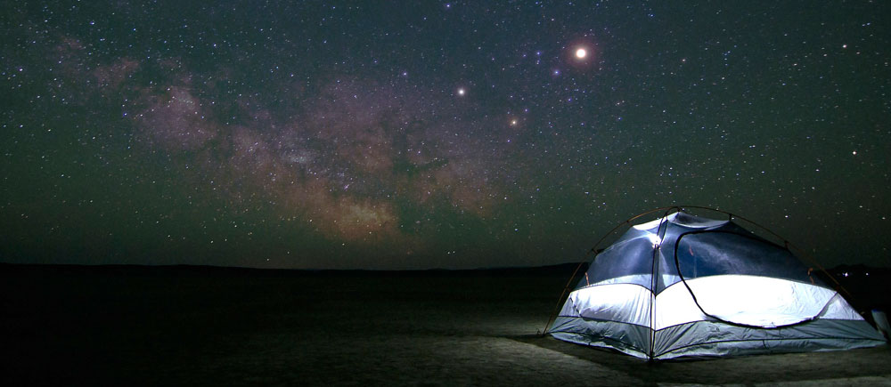

| Caso | Enlace |
|---|---|
| Juan Maldonado | |
| Cabo Valdez | |
| Caso Pasten | |
| Valle del elqui | |
| 24 horas central | |
| El incidente de ketty |
De esta manera, la historia de los avistamientos de OVNIS en Chile es larguísima y se remonta a tiempos inmemorables. Se cree que las civilizaciones precolombinas tenían contacto o creían en otras civilizaciones fuera de esta tierra. Ciento de películas nos han hecho soñar con seres tiernos, gentiles o malignos y destructores que toman formas inimaginables dignas de Hollywood. No obstante lo fantástico que ello pueda parecer, el desarrollo de la ufología en Chile ha dado vida a asociaciones y grupos que se dedican a desmentir y/o analizar e investigar científicamente ese tipo de fenómenos. Por ejemplo, la Agrupación de Investigaciones Ovniológicas de Chile, el Universo Geu Chile, Marcc Ufo y la cruzada ufológica llamada FARO son comunidades de viajeros chilenos consagrada a reunir ufólogos aficionados.
Según el viajero, nuestro país es uno de los destinos donde los avistamientos de OVNIS ocurren con mayor frecuencia. En el artículo que donde se explaya sobre la ufología en Chile, el autor recomienda la comuna de San Clemente, poblado cercano al Valle del Maule como sitio de encuentros imperdibles. En el año 2008 se creó en esta área una ruta oficial de turismo ufológico, que comprende lugares donde se han producido famosos casos de avistamiento de OVNIS. El lugar más destacado es la plataforma geológica del Enladrillado, donde es posible observar unos 200 bloques volcánicos supuestamente instalados por civilizaciones antiguas. Algunos ufólogos incluso aseguran que estos bloques sirven como plataformas de aterrizaje para naves extraterrestres.